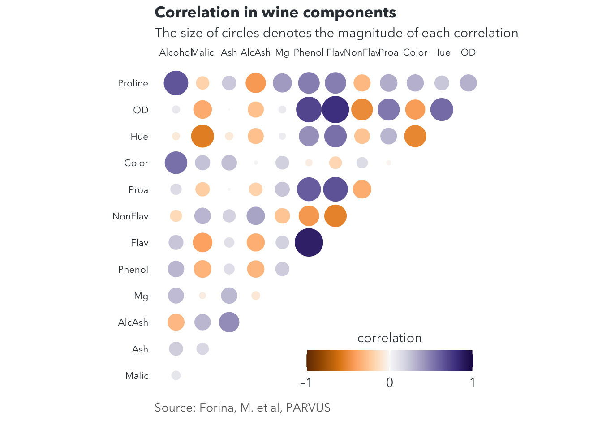
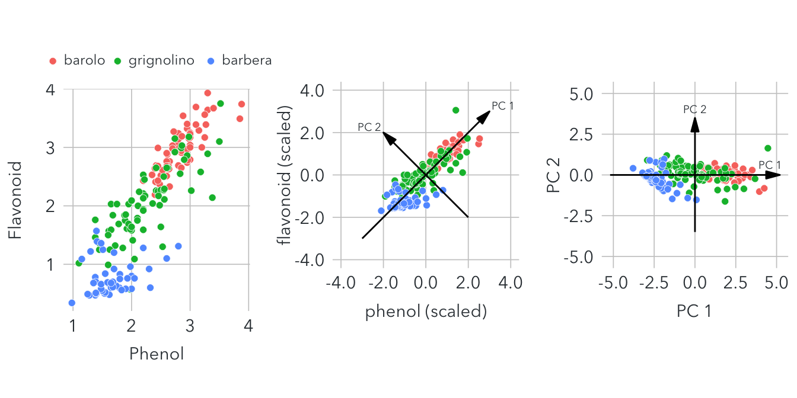
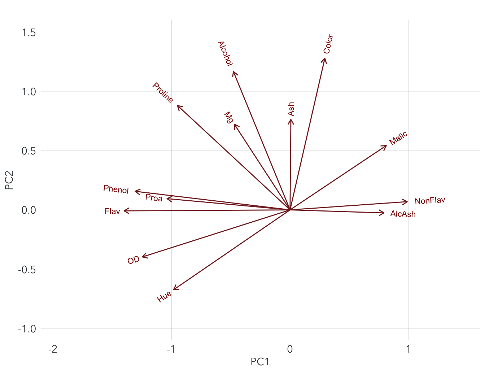
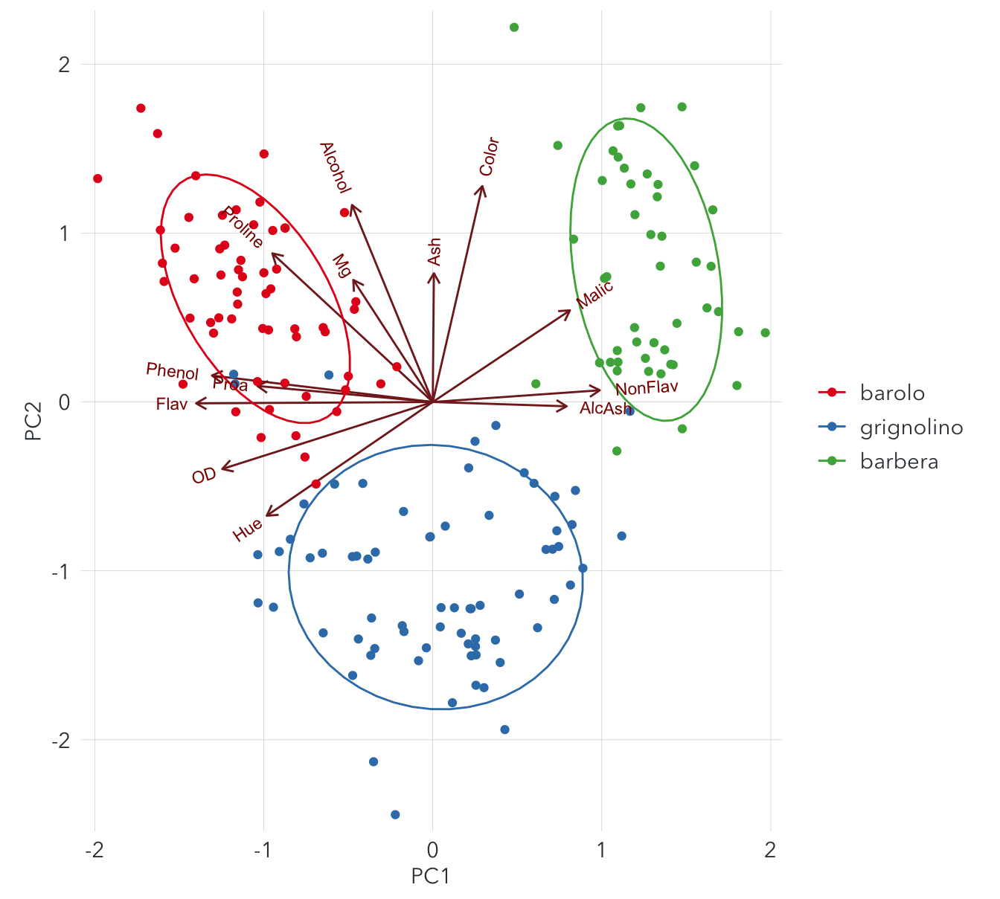

library(tidyverse)
library(devtools)
install_github("vqv/ggbiplot")
library(ggbiplot)
library(reshape2) #melt()
library(colorspace)
library(cowplot)
library(Stat2Data)
library(RColorBrewer)
library(plotly)In this project, we work with the Wine Data Set from UC Irvine Machine Learning Repository.
The dataset contains 178 observations, which result from a chemical analysis of wines derived from 3 different types.
There are 13 features that represent 13 components in the wines. These include:
- Alcohol
- Malic Acid
- Ash
- Alcalinity of Ash
- Magnesium
- Total Phenols
- Flavanoids
- Nonflavanoid Phenols
- Proanthocyanins
- Color Intensity
- Hue
- OD280/D315 of Diluted Wines
- Proline
data(wine)
wine$Class = wine.class
colnames(wine) = c("Alcohol", "Malic", "Ash", "AlcAsh", "Mg", "Phenol", "Flav", "NonFlav", "Proa", "Color", "Hue", "OD", "Proline", "Class")
head(wine)Some questions:
Which component is more dominant in each class of wine?
What is the relationship between each component? Ex: Do wines with a high level of malic acid also have a high level of manganese or a low level of flavonoid?
Is there any redundant features, which do not reveal much about the core patterns in the dataset?
A common approach to answer these questions is to draw scatterplots between each pair of features. However, since there are up to 13 variables, we need to look at 78 (13*12/2) graphs, which can be time-consuming.
A simpler and better solution is a correlogram, which shows the correlation between each feature.
data <- cor(wine[,1:13])
corre <- melt(data)
ggplot(filter(corre, as.integer(Var1) < as.integer(Var2)), aes(Var1, Var2, fill = value, size = abs(value))) +
geom_point(shape = 21, stroke = 0) +
scale_x_discrete(position = "top", name = NULL, expand = c(0, 0.8)) +
scale_y_discrete(name = NULL, expand = c(0, 0.8)) +
scale_size_area(max_size = 12, limits = c(0, 1), guide = "none")+
scale_fill_continuous_divergingx(
palette = "PuOr", rev = FALSE,
limits = c(-1, 1),
breaks = c(-1, 0, 1),
labels = c("–1", "0", "1"),
name = "correlation",
guide = guide_colorbar(
direction = "horizontal",
label.position = "bottom",
title.position = "top",
barwidth = grid::unit(140, "pt"),
barheight = grid::unit(17.5, "pt"),
ticks.linewidth = 1
)
) +
coord_fixed() +
labs(
caption = "Source: Forina, M. et al, PARVUS",
title = "Correlation in wine components ",
subtitle = "The size of circles denotes the magnitude of each correlation") +
theme(
panel.background = element_blank(),
axis.text = element_text(family = "Avenir Next", color = "#353D42", size = 8),
axis.line = element_blank(),
axis.ticks = element_blank(),
axis.ticks.length = grid::unit(3, "pt"),
legend.position = c(.97, .0),
legend.justification = c(1, 0),
legend.title.align = 0.5,
legend.text = element_text(family = "Avenir Next", color = "#353D42", size = 11),
legend.title = element_text(family = "Avenir Next", color = "#353D42", size = 11),
plot.title = element_text(family = "Avenir Next", size = 13, color = "#353d42", face = "bold"),
plot.subtitle = element_text(family = "Avenir Next", size = 11, color = "#353D42", hjust = 0),
plot.caption = element_text(family = "Avenir Next", size = 10, color = "#666666", hjust = 0)
)
Based on this graph, we may clearly see a strong positive correlation between Phenol and Flav or a strong negative correlation between Hue and Malic. However, this approach hides the underlying data points, which would lead to some incorrect conclusions. PCA is a better option to find patterns while still showing the raw data.
Principal component analysis or PCA is a popular technique for dimensionality reduction and finding patterns in exploratory analysis.
PCA can be used to deal with the so-called “the curse of dimensionality”, which refers to some problems with high-dimensional datasets. These include reduced estimation accuracy, higher computational expenses to handle data, and hard interpretation.
PCA is based on an assumption that most high-dimensional datasets contain many correlated variables that show overlapping information. Thus, we may reduce the set to a smaller number of important features without affecting much core information.
Let’s take a dataset of multiple physical features of students for example. Variables such as overall weight, height, lengths of legs and arms, circumferences of chest and hips, etc are typically correlated with each other. We may reduce them into a single feature called overall size. People with larger overall size tend to have these features higher. Other important feature can be sex and age. There are noticeable differences between the measurements of male and female or children and adults. So, from the original set of 50 or even 100 variables, we may reduce to only 3 key features that can still reveal important patterns in the data.
The first step in PCA is to standardize the dataset to unit variance (var = 1). This ensures that variables measured in different units contribute equally to the analysis. Otherwise, features with larger ranges may dominate those with smaller ranges.
For instance, the alcohol variable with a range from 0-500 mg may dominate over a phenol variable with a range 0-10 g.
The formula for standardization: \(\frac{value \:-\: mean}{standard \: deviation}\)
Here’s what the original dataset looks like after standardization.
scaled_wine <- data.frame(scale(wine[,1:13]))
head(scaled_wine)The next step is to find the principle components, which are linear combinations of the original variables. We combine in a way that most of the variance or information of the original variables is compressed in the first principal component (PC1). Similarly, PC2 should account for the second largest amount of variation in the data.
We can perform PCA in R with the pcrcomp() function.
pca = prcomp(wine[,1:13], scale = TRUE)
data.frame(pca$rotation)The results show the loadings, which define the direction of the principal components. For example, PC1 and PC2 can be constructed as the following form:
\(PC1 = -0.144*Alcohol + 0.245*Malic + .... - 0.376*OD - 0.287*Proline\) \(PC2 = 0.484*Alcohol + 0.225*Malic + .... - 0.164*OD + 0.365*Proline\)
var_explained <- data.frame(PC = paste0("PC",1:13),
var_explained = (pca$sdev)^2/sum((pca$sdev)^2))
var_explained$PC <- factor(var_explained$PC, levels = c("PC1","PC2","PC3","PC4","PC5","PC6","PC7","PC8","PC9","PC10","PC11","PC12","PC13"))
scree_plot <- ggplot(var_explained, aes(x = PC, y = var_explained, group = 1)) +
geom_line(size = 0.2) +
geom_col(width = 0.5, fill = "#56B4E9") +
geom_point(size = 1)+
scale_y_continuous(expand = c(0,0), name = "explained variance") +
scale_x_discrete(expand = c(0,0), name = "")+
coord_cartesian(clip = "off") +
theme(
panel.background = element_blank(),
panel.grid.major.y = element_line(color = "#cbcbcb", size = 0.5),
axis.ticks = element_blank(),
axis.text = element_text(family = "Avenir Next", color = "#353d42", size = 11),
axis.title = element_text(family = "Avenir Next", color = "#353d42", size = 11)
)
ggplotly(scree_plot)The scree plot shows that PC1 and PC2 explains 36.2% and 19.2% of variation in the data. With the first 4 PCs, we can explain up to 73.5% of the information from the provided dataset with 13 variables.
The overall PCA process can be summarized by the following graph. 
There are two things that we are interested in the results of PCA:
The composition of principal components
The locations of each data point in the principal components space
Firstly, we take a look at the composition of PC1 and PC2
pca <- prcomp(wine[,1:13], scale = TRUE)
ggbiplot(pca, alpha = 0) +
scale_x_continuous(name = "PC1", expand = c(0, 0.1), limits = c(-2, 1.5)) +
scale_y_continuous(name = "PC2", expand = c(0, 0.1), limits = c(-1, 1.5)) +
scale_color_manual(values = c("#0072B2")) +
theme(
panel.background = element_blank(),
panel.grid.major = element_line(size = 0.1, color = "#cbcbcb" ),
axis.text = element_text(family = "Avenir Next", color = "#353D42", size = 11),
axis.title = element_text(family = "Avenir Next", color = "#353D42", size = 11),
axis.ticks = element_blank(),
legend.position = "top"
) The arrows represent how original scaled variables contribute to the PCs. They have varying lengths because there are also other PCs. Shorter arrows indicate that they may contribute more to other higher-order PCs that are not shown in this graph.
We can see that PC1 is mainly contributed by non-flavonoid, alash, proa, flavonoid, and flavonoid. PC2 is mainly contributed by ash, mg, color, and alcohol. Other features contribute in varying amounts to both PC1 and PC2. Some conclusions from this graph:
Samples with high levels of malic acid also tend to have high levels of alcalinity of ash and nonflavonoid phenols
Samples with high levels of flavonoids also tend to have high levels of proanthocyanins and phenols
Sample with high levels of malic acid, ash, and nonflavonoid phenols tend to have low levels of flavonoids, proanthocyanins, phenols, and OCD
Samples with high levels of alcohol also tend to have high levels of ash and color intensity
Secondly, we examine the location of original data points in the 2D space of PC1 and PC2
ggbiplot(pca, group = wine.class, ellipse = TRUE) +
scale_x_continuous(name = "PC1", expand = c(0, 0.1)) +
scale_y_continuous(name = "PC2", expand = c(0, 0.1)) +
scale_color_brewer(name = "None", palette = "Set1") +
theme(
panel.background = element_blank(),
panel.grid.major = element_line(size = 0.1, color = "#cbcbcb"),
axis.text = element_text(family = "Avenir Next", color = "#353D42", size = 11),
axis.title = element_text(family = "Avenir Next", color = "#353D42", size = 11),
axis.ticks = element_blank(),
legend.position = "right",
legend.text = element_text(family = "Avenir Next", color = "#353D42", size = 11),
legend.title = element_blank(),
legend.background = element_rect(fill = "white", color = NA),
legend.key = element_blank()
) We can easily notice defined clusters of wine classes. Some conclusions:
Barbera wines tend to have higher than average levels of malic acid, alcalinity of ash, and nonflavonoid phenols, as well as lower than average levels of flavonoids, proanthocyanins, and phenols
Barolo wines tend to have lower than average levels of malic acid, alcalinity of ash, and nonflavonoid phenols, as well as higher than average levels of flavonoids, proanthocyanins, and phenols
Both barolo and barbera wines tend to have higher than average levels of color intensity, ash, alcohol, and magnesium
Grignolion wines tend to have lower than average levels of color intensity, ash, alcohol, and magnesium
These results of PCA can be helpful for building a classification model to identify the class of a wine based on the contents.